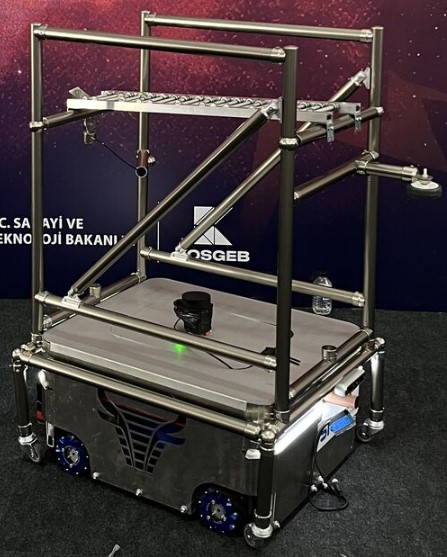

Otonom Mobil Robot (AMR)
Deptron Nova serisi, 1500 kg'a kadar yük taşıma kapasitesi ile ağır endüstriyel koşullar için tasarlanmıştır.
LiDAR sensörleri ve gelişmiş kameraları sayesinde ortamı gerçek zamanlı haritalandırır (SLAM). Çizgi veya manyetik banda ihtiyaç duymadan özgürce hareket eder.
- Tam Otonom Navigasyon
- Güvenli Çarpışma Önleme
- Modüler Üst Yapı Tasarımı

Sesli Asistan & Yapay Zeka
Robotlarımız sadece hareket etmez, sizi dinler. Sesli asistan teknolojimiz sayesinde operatörler, karmaşık tablet ekranları yerine doğal konuşma diliyle komut verebilir.
ROS2 tabanlı altyapımız ve yapay zeka algoritmalarımız, trafik sıkışıklığını önler ve en verimli rotayı anlık olarak hesaplar.
- Türkçe Sesli Komut Desteği
- Dinamik Rota Optimizasyonu
- WMS/ERP Entegrasyonu
